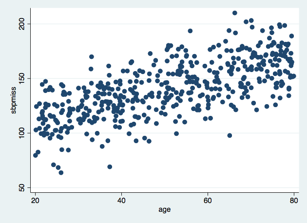

. use practical1_1.dta, clear
(Written by R. )
. summ
Variable | Obs Mean Std. Dev. Min Max
-------------+---------------------------------------------------------
age | 1,000 50.43641 17.47249 20.02051 79.95818
sbpcomplete | 1,000 140.2029 25.35248 63.73411 210.0731
sbpmiss | 481 140.7308 25.38154 63.73411 210.0731
We see that the sbpmiss contains 519 missing values. The data set has 1000 rows, so we have around 50% missingness in this variable. The other two variables are fully observed.
. scatter sbpmiss age, name(pr1plot1, replace)

The plot shows that, at least among the subset of the dataset where SBP was observed, there is a positive association between age and SBP. This is of course consistent with established evidence about age and blood pressure.
. gen r = 1*(sbpmiss!=.)
. logistic r age
Logistic regression Number of obs = 1,000
LR chi2(1) = 1.04
Prob > chi2 = 0.3083
Log likelihood = -691.90605 Pseudo R2 = 0.0007
------------------------------------------------------------------------------
r | Odds Ratio Std. Err. z P>|z| [95% Conf. Interval]
-------------+----------------------------------------------------------------
age | 1.003701 .003641 1.02 0.309 .9965899 1.010862
_cons | .7691829 .1490352 -1.35 0.176 .5261416 1.124492
------------------------------------------------------------------------------
Note: _cons estimates baseline odds.
The logistic regression shows there is no evidence of an association between missingness in sbpmiss and age. The data are thus consistent with MCAR.
. logistic r age sbpmiss
outcome does not vary; remember:
0 = negative outcome,
all other nonmissing values = positive outcome
r(2000);
Stata reports that the model could not be fitted due to the outcome not varying. Stata’s default behaviour is to try and fit the model using the complete cases, i.e. when sbpmiss is not missing. However, within this subset, r is always 1. Consequently, the logistic regression model cannot be fitted. This is because, as intuition suggests, one cannot explore how missingness in sbpmiss depends on the value of sbpmiss. Thus we cannot check if the data are MAR or MNAR, although our previous analysis showed that the observed data are consistent with MCAR.
. logistic r age sbpcomplete
Logistic regression Number of obs = 1,000
LR chi2(2) = 1.04
Prob > chi2 = 0.5942
Log likelihood = -691.90448 Pseudo R2 = 0.0008
------------------------------------------------------------------------------
r | Odds Ratio Std. Err. z P>|z| [95% Conf. Interval]
-------------+----------------------------------------------------------------
age | 1.003882 .004868 0.80 0.424 .9943856 1.013468
sbpcomplete | .9998131 .0033402 -0.06 0.955 .9932878 1.006381
_cons | .782471 .2834523 -0.68 0.498 .3846964 1.591543
------------------------------------------------------------------------------
Note: _cons estimates baseline odds.
We can now see that missingness in sbpmiss appears independent of both age and SBP, but only by cheating and using the fully observed sbpcomplete. In reality we would of course not have this variable.
. use practical1_2.dta, clear
(Written by R. )
. summ
Variable | Obs Mean Std. Dev. Min Max
-------------+---------------------------------------------------------
age | 1,000 50.35014 17.54039 20.05911 79.92479
sbpcomplete | 1,000 140.8869 25.48737 65.6017 217.3164
sbpmiss | 511 135.978 24.07168 65.6017 206.6972
. gen r = 1*(sbpmiss!=.)
. logistic r age
Logistic regression Number of obs = 1,000
LR chi2(1) = 153.68
Prob > chi2 = 0.0000
Log likelihood = -616.06628 Pseudo R2 = 0.1109
------------------------------------------------------------------------------
r | Odds Ratio Std. Err. z P>|z| [95% Conf. Interval]
-------------+----------------------------------------------------------------
age | .9529606 .0039874 -11.51 0.000 .9451773 .960808
_cons | 11.91417 2.654246 11.12 0.000 7.698974 18.4372
------------------------------------------------------------------------------
Note: _cons estimates baseline odds.
Repeating the logistic analyses with the second dataset, we find that missingness in sbpmiss is associated with age. In particular, as age increases, the log odds of SBP being observed decreases. This means we have evidence against the MCAR assumption. Thus the missingness could be MAR or MNAR.
. logistic r age sbpcomplete
Logistic regression Number of obs = 1,000
LR chi2(2) = 157.75
Prob > chi2 = 0.0000
Log likelihood = -614.02995 Pseudo R2 = 0.1138
------------------------------------------------------------------------------
r | Odds Ratio Std. Err. z P>|z| [95% Conf. Interval]
-------------+----------------------------------------------------------------
age | .9466321 .0051156 -10.15 0.000 .9366587 .9567117
sbpcomplete | 1.007033 .003506 2.01 0.044 1.000185 1.013928
_cons | 6.207162 2.415337 4.69 0.000 2.895161 13.30802
------------------------------------------------------------------------------
Note: _cons estimates baseline odds.
Adding sbpcomplete to the logistic regression model, we see that there is borderline significant evidence that missingness is associated with sbpcomplete, conditional on age. Thus we have borderline significant evidence to reject MAR in favour of MNAR. Here we cannot be that definitive about the true (population) mechanism type. In any case, note however that we are only able to draw these conclusions by cheating and using the fully observed sbpcomplete variable.
. logistic r sbpcomplete
Logistic regression Number of obs = 1,000
LR chi2(1) = 39.51
Prob > chi2 = 0.0000
Log likelihood = -673.14951 Pseudo R2 = 0.0285
------------------------------------------------------------------------------
r | Odds Ratio Std. Err. z P>|z| [95% Conf. Interval]
-------------+----------------------------------------------------------------
sbpcomplete | .9840885 .0025785 -6.12 0.000 .9790477 .9891552
_cons | 10.03184 3.766003 6.14 0.000 4.806569 20.93755
------------------------------------------------------------------------------
Note: _cons estimates baseline odds.
From this analysis we see that missingness in sbpmiss is associated with the SBP values. At first sight this might be interpreted as indicating that the data are not MAR, contradicting our preceding conclusion. This is however incorrect. MAR says that missingness is conditionally independent of the partially observed variable, conditional on the fully observed variable(s).
. use practical1_3.dta, clear
(Written by R. )
. gen r = 1*(sbpmiss!=.)
. logistic r age
Logistic regression Number of obs = 1,000
LR chi2(1) = 6.13
Prob > chi2 = 0.0133
Log likelihood = -688.83295 Pseudo R2 = 0.0044
------------------------------------------------------------------------------
r | Odds Ratio Std. Err. z P>|z| [95% Conf. Interval]
-------------+----------------------------------------------------------------
age | .9908297 .003698 -2.47 0.014 .9836082 .9981042
_cons | 1.434147 .2823804 1.83 0.067 .9749759 2.109567
------------------------------------------------------------------------------
Note: _cons estimates baseline odds.
. logistic r age sbpcomplete
Logistic regression Number of obs = 1,000
LR chi2(2) = 27.78
Prob > chi2 = 0.0000
Log likelihood = -678.00659 Pseudo R2 = 0.0201
------------------------------------------------------------------------------
r | Odds Ratio Std. Err. z P>|z| [95% Conf. Interval]
-------------+----------------------------------------------------------------
age | 1.00614 .0050486 1.22 0.223 .9962932 1.016084
sbpcomplete | .9847695 .0032976 -4.58 0.000 .9783274 .991254
_cons | 5.657083 2.041689 4.80 0.000 2.788603 11.47621
------------------------------------------------------------------------------
Note: _cons estimates baseline odds.
Again from the first logistic regression we find evidence to reject MCAR. It is only by cheating again (by using sbpcomplete) that we are able to determine that now the missing values in sbpmiss are MNAR. In fact, from this analysis it appears that missingness is independent of age conditional on sbpcomplete. This is still MNAR.
. use practical1_4.dta, clear
(Written by R. )
. gen r = 1*(sbpmiss!=.)
. logistic r age
Logistic regression Number of obs = 1,000
LR chi2(1) = 0.39
Prob > chi2 = 0.5314
Log likelihood = -691.89295 Pseudo R2 = 0.0003
------------------------------------------------------------------------------
r | Odds Ratio Std. Err. z P>|z| [95% Conf. Interval]
-------------+----------------------------------------------------------------
age | .9977472 .003596 -0.63 0.531 .9907239 1.00482
_cons | 1.019739 .1929502 0.10 0.918 .7037672 1.477575
------------------------------------------------------------------------------
Note: _cons estimates baseline odds.
. logistic r age sbpcomplete
Logistic regression Number of obs = 1,000
LR chi2(2) = 33.32
Prob > chi2 = 0.0000
Log likelihood = -675.42991 Pseudo R2 = 0.0241
------------------------------------------------------------------------------
r | Odds Ratio Std. Err. z P>|z| [95% Conf. Interval]
-------------+----------------------------------------------------------------
age | .9966478 .0036585 -0.91 0.360 .9895031 1.003844
sbpcomplete | .9908734 .0016243 -5.59 0.000 .987695 .9940621
_cons | 3.59323 1.064064 4.32 0.000 2.01103 6.420242
------------------------------------------------------------------------------
Note: _cons estimates baseline odds.
For the fourth dataset, missingness in sbpmiss appears independent from age. The data are thus consistent with an MCAR mechanism. However, upon adding sbpcomplete to the logistic regression, we see that missingness is in fact MNAR. To help understand this, following the hint we re-plot age against the complete SBP variable:
. scatter sbpcomplete age, name(pr1plot2, replace)
The plot shows (we could check this with a linear regression) that age is independent of SBP. Thus although missingness in SBP depended on SBP, since age and SBP were generated (in data4) as being independent, there is no association between missingness in SBP and age. The example makes clear that even when data appear MCAR, it is possible (although arguably unlikely) that in fact they are MNAR.